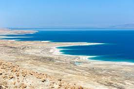

Über den Austausch
Das deutsch-israelische Jugendaustauschprojekt mit Jugendlichen aus Neumünster und Zichron Yaacov wurde von Dialog, der Bildungsstätte für interkulturelle Begegnungen, und der Herbert-Gerisch-Stiftung gestaltet.
Dieses Jahr besuchen wir unsere Partnerschule in Zichron Yaacov zuerst, der Gegenbesuch findet vom 15. - 22.12.2022 statt. Am 24.10.2022 war es dann auch schon so weit, Frau Hilscher und Herr Wieprecht haben sich in Begleitung von 15 aufgeregten Klaus-Grothern aus Hamburg, über Antalya, nach Tel Aviv auf den Weg gemacht.
Wie auch schon beim letzten Austausch stellt das gemeinsame Theaterprojekt einen wichtigen Aspekt für den Austausch dar. Die erste Begegnung mit unseren Austauschpartnern fand Online über Zoom statt, dort stellte sich jeder kurz vor und lernte einander kennen.
Den Rest überließen die Lehrer uns, mithilfe einer gemeinsamen WhatsApp-Gruppe tauschten wir unsere Instagram Konten aus und lernten einander besser kennen.
Programmablauf in Israel
Durch Exkursionen, Workshops und Diskussionen sollen wir neue Erfahrung machen und eine engere Beziehung zu unseren Austauschpartnern herstellen. Die verschiedenen Programme werden auf Begegnungen mit Zeitzeugen und Fachleuten basieren, welche uns viele relevante Themen näher bringen.
Unter anderem werden Jugendliche und das tägliche Leben, das Holocaustbewusstsein, die Politik in Israel, Entwicklung Israels im 20. Jh., Kultur-, Gesellschafts- und Religionsgeschichte und die Einwanderung nach Israel thematisieren. Natürlich besuchen wir auf den Exkursionen kulturhistorische Stätten und Sehenswürdigkeiten, wie zum Beispiel: Den Rotschild Boulevard und Rabin Platz in Tel Aviv sowie die Altstadt und den Markt, Haifa, Caesarea, Massada und die Feste, die Holocaustgedenkstätte Yad VaShem, die Altstadt Jerusalems, das Tote Meer, den David Bach in Ein Gedi. Unsere Guides sind außerdem Heiko Siebert und Anna Roth.
Mein Aufenthalt
(... Mein Aufenthalt TEXT ...)